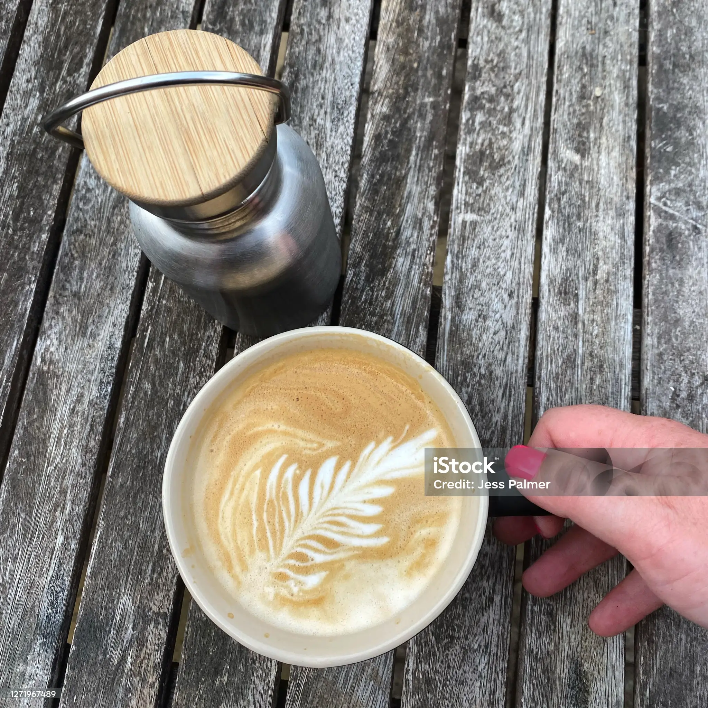
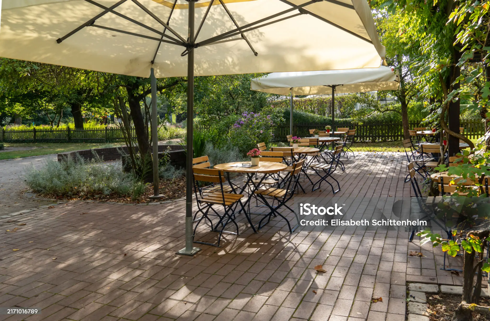

Last updated Nov 11, 2025
Last updated Nov 11, 2025
Location: Bytes Café
When's the last time you've had an Italian soda? It had been a while for me, but I wanted to join my friend for a non-caffeinated beverage at Bytes and I became reacquainted with the combination of fizzy water and artificial fruit syrup.
Recommendation: Raspberry Italian Soda

Location: Pop Tea Bar
When your boba craving strikes, head over to Pop Tea Bar, a cute little bubble tea shop on Cambridge Avenue. The menu is your standard bubble tea fare — the tapioca is fresh, the service is fast, and the tea is smooth and delicious.
Recommendation: Classic Milk Tea with Boba

Location: CoHo Coffee
I can't tell you whether CoHo has a particularly amazing Vanilla Bean Latte, only because CoHo is the only place I've ever ordered a Vanilla Bean Latte from — but the one I got was delicious.
Recommendation: Vanilla Bean Latte
Location: Nexus Cafe
When I went to Nexus, I was in the mood for something sweet but light. I ordered the Strawberry Agua Fresca — refreshing, perfectly balanced, and not too sweet.
Recommendation: Strawberry Agua Fresca
